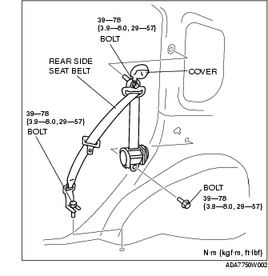

Rear side seat belt removal/installation
- • The ELR has a spring that will unwind if the retractor cover is removed. The spring cannot be rewound by hand. If this occurs, the ELR will not work properly. Therefore, do not disassemble the retractor.
1. Fold the rear seat upward.
2. Remove the trunk side trim. (See TRUNK SIDE TRIM REMOVAL/INSTALLATION.)
3. Remove the cover.

4. Partially peel back the floor covering.
5. Remove the bolts.
6. Remove the rear side seat belt.
7. Install in the reverse order of removal.